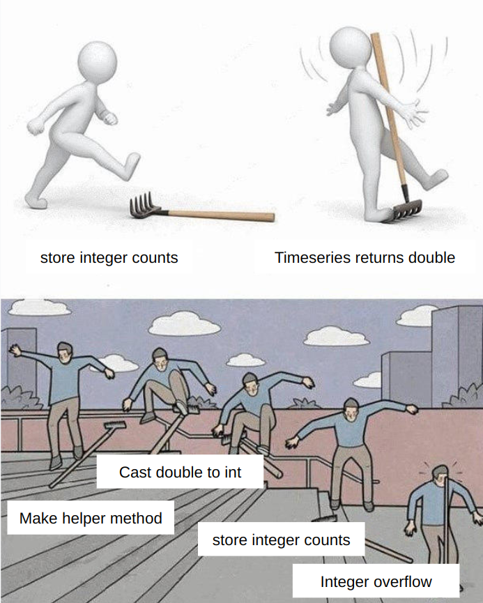

FAQ - Project 2B
Setup
I’m getting an error that spark failed to ignite.
This may indicate that some other process is already using Spark and hasn’t been terminated. Restarting your computer should fix this.
I have a divergent branches error after trying the command git pull.
Run git config pull.rebase false and pull again.
I’m getting ‘Cannot invoke “ngordnet.ngrams.TimeSeries.years()” because “ILILILILIILILIILILIILIL” is null’
Re-pull the libraries in library-fa24.
I tried running git pull from library-fa24 but am still getting the above exception.
Be sure you’ve re-imported the libraries in IntelliJ after getting the new library files.
No matter what I do, the libraries still aren’t working!
Try deleting the library-fa24 entirely and re-cloning it.
I’m getting Failed to bind to /0.0.0.0:4567 when running Main.java.
Save your code and restart IntelliJ. If this doesn’t work, try restarting your computer as well.
HyponymsHandler - Basic Case
I’m getting NullPointerException because object is null when iterator() is called.
This is a really common issue. Whenever you are trying to iterate through an object with an enhanced-for loop, like this:
for (<Type> element : elements){...}
If elements is null, you’ll get this error, because we can’t call iterator() on null. We recommend you check elements to ensure it isn’t null before iterating.
I’m getting NullPointerException because the output of get is null.
Recall that if the requested key is not found in the map, then get will return null. Another cause of this issue may be exploring the children of “sink” nodes (which don’t have any children).
HyponymsHandler - Lists of Words
I’m getting timeout issues after 60000 ms, or the autograder tells me that I should make sure my code terminates on all inputs.
Be sure you’re using the appropriate data structures - do we have to output duplicate words? Everywhere you can reasonably use a Set instead of a List, you’ll save some runtime. You should consider the runtime of List and Set functions as you use them. Also, make sure you have some way of accessing synsets associated with a given word in constant time. You also shouldn’t reconstruct the graph in each call to handle.
My test is returning an empty list.
If you’re using List.of() to build a list, make sure that your comma separations are outside quotes.
List.of("one, two") is a single element list with the word “one, two”. List.of("one", "two") is a two element list with “one” and “two” separated.
How do I tiebreak words with the same counts?
It doesn’t matter for this project - any behavior is acceptable. This means you can break ties alphabetically, or randomly, or not at all!
How should I store total popularity of words?
Think about what you have implemented in Proj 2A. TimeSeries values are doubles, not ints. If you store the integer counts, you might get integer overflow.
